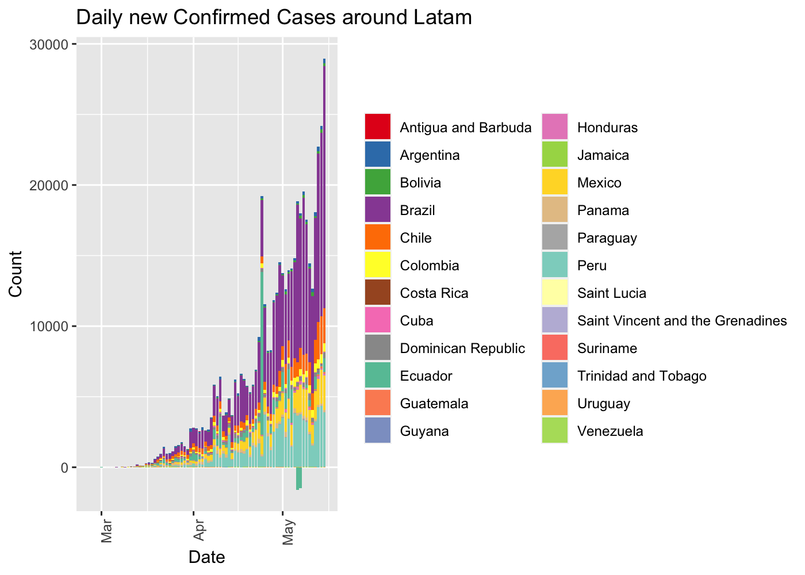
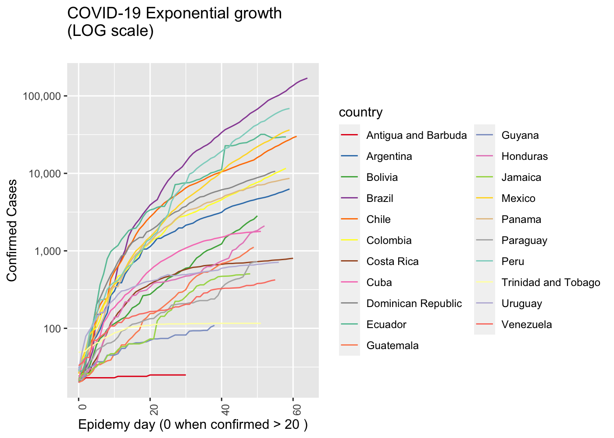
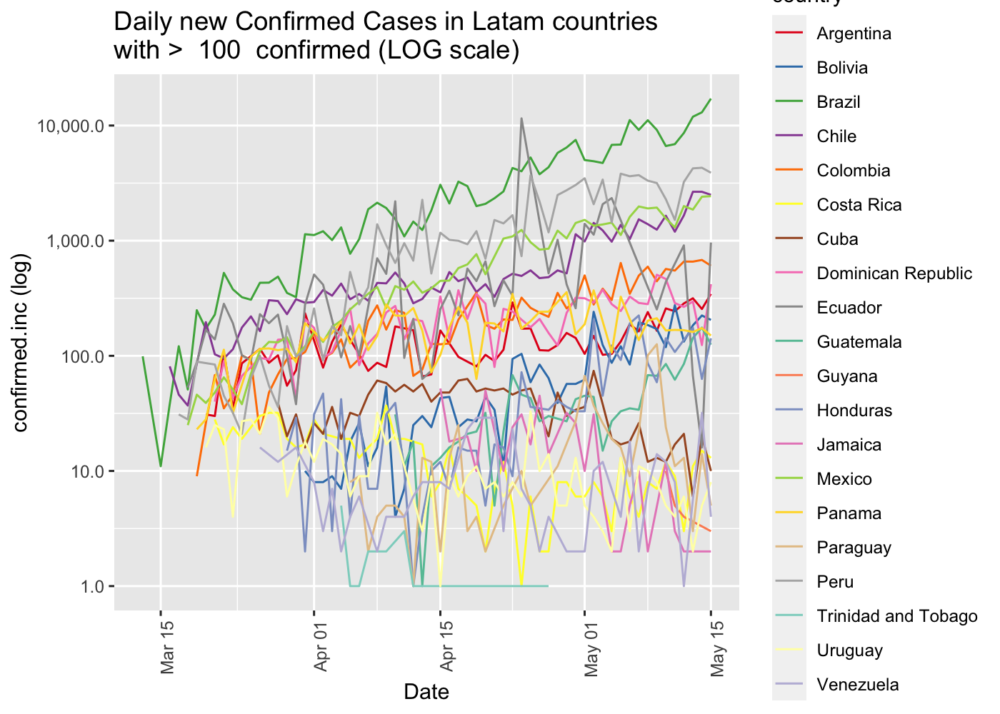
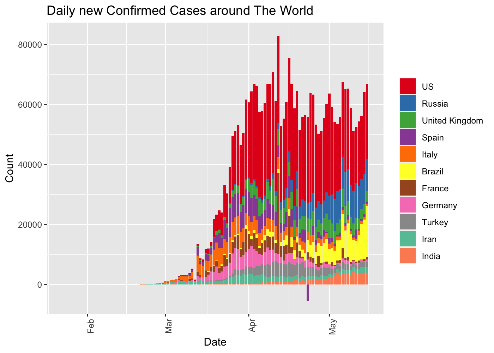
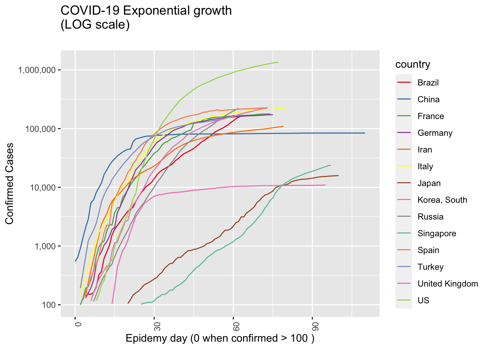
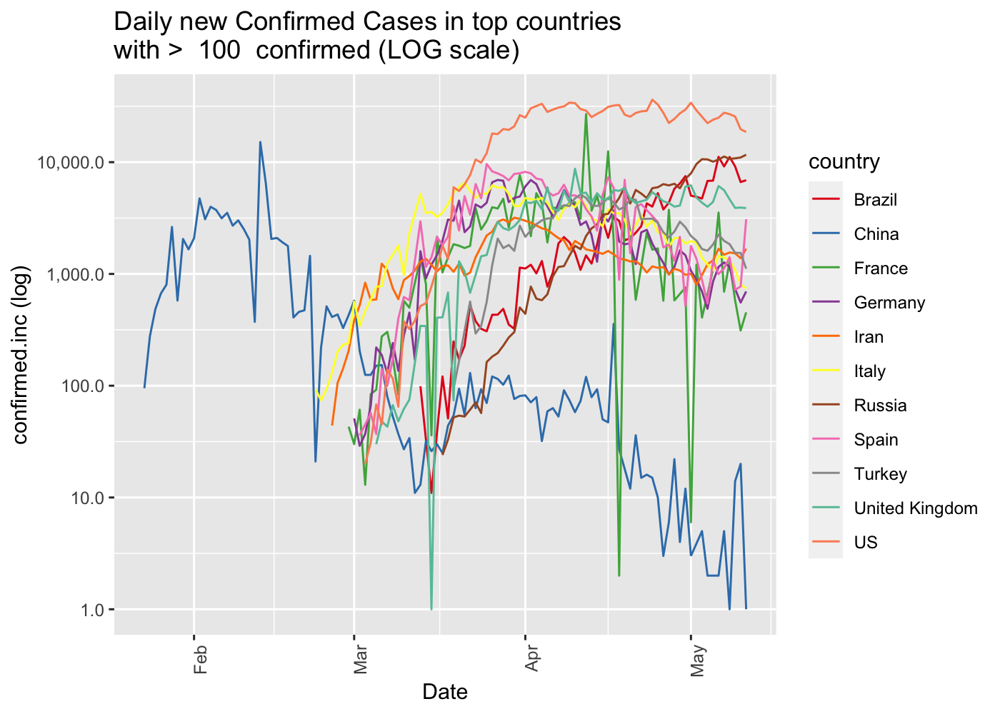
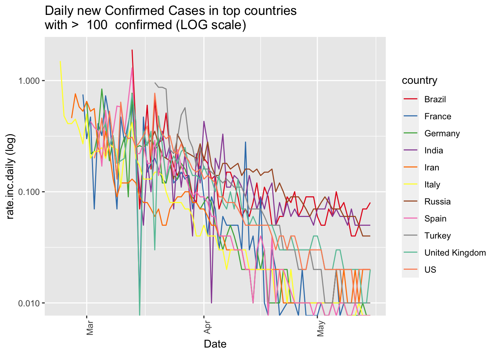
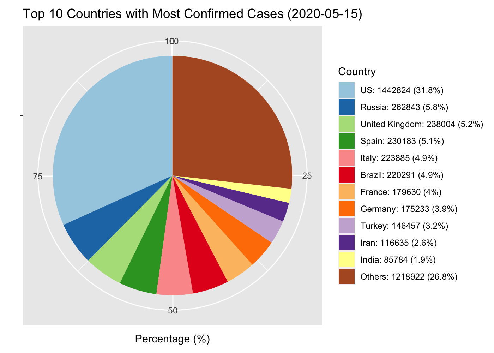
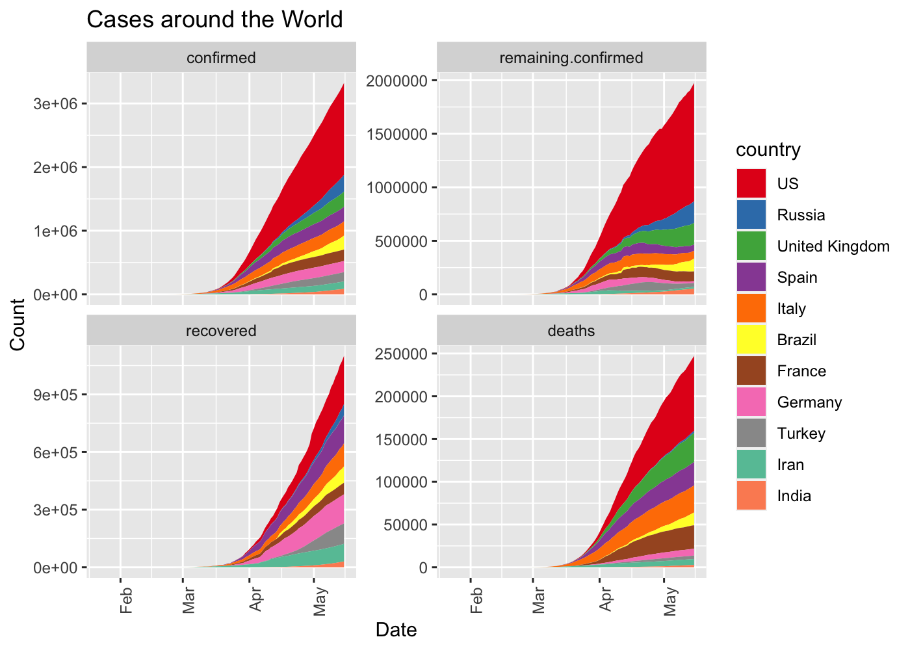

This package curate (downloads, clean, consolidate, smooth) data from Johns Hokpins for analysing international outbreak of COVID-19.
It includes several visualizations of the COVID-19 international outbreak.
Yanchang Zhao, COVID-19 Data Analysis with Tidyverse and Ggplot2 - China. RDataMining.com, 2020.
URL: http://www.rdatamining.com/docs/Coronavirus-data-analysis-china.pdf.
- COVID19DataProcessor generates curated series
- visualizations by Yanchang Zhao are included in ReportGenerator R6 object
- More visualizations included int ReportGeneratorEnhanced R6 object
- Visualizations ReportGeneratorDataComparison compares all countries counting epidemy day 0 when confirmed cases > n (i.e. n = 100).
Consideration
Data is still noisy because there are missing data from some regions in some days. We are working on in it.
How to get started (Development version)
Install the R package using the following commands on the R console:
# install.packages("devtools") devtools::install_github("rOpenStats/COVID19analytics", build_opts = NULL)
How to use it
library(COVID19analytics) #> Warning: replacing previous import 'ggplot2::Layout' by 'lgr::Layout' when #> loading 'COVID19analytics' #> Warning: replacing previous import 'dplyr::intersect' by 'lubridate::intersect' #> when loading 'COVID19analytics' #> Warning: replacing previous import 'dplyr::union' by 'lubridate::union' when #> loading 'COVID19analytics' #> Warning: replacing previous import 'dplyr::setdiff' by 'lubridate::setdiff' when #> loading 'COVID19analytics' #> Warning: replacing previous import 'magrittr::equals' by 'testthat::equals' when #> loading 'COVID19analytics' #> Warning: replacing previous import 'magrittr::not' by 'testthat::not' when #> loading 'COVID19analytics' #> Warning: replacing previous import 'magrittr::is_less_than' by #> 'testthat::is_less_than' when loading 'COVID19analytics' #> Warning: replacing previous import 'dplyr::matches' by 'testthat::matches' when #> loading 'COVID19analytics' #> Warning: replacing previous import 'testthat::matches' by 'tidyr::matches' when #> loading 'COVID19analytics' #> Warning: replacing previous import 'magrittr::extract' by 'tidyr::extract' when #> loading 'COVID19analytics' library(dplyr) #> #> Attaching package: 'dplyr' #> The following objects are masked from 'package:stats': #> #> filter, lag #> The following objects are masked from 'package:base': #> #> intersect, setdiff, setequal, union
data.processor <- COVID19DataProcessor$new(force.download = FALSE) dummy <- data.processor$setupData() #> INFO [10:18:29.080] {stage: data loaded} dummy <- data.processor$curate() #> Warning in countrycode(x, origin = "country.name", destination = "continent"): Some values were not matched unambiguously: MS Zaandam #> INFO [10:18:31.333] {stage: consolidated} #> INFO [10:18:32.271] {stage: Starting first imputation} #> INFO [10:18:32.273] Imputation indicator {indicator: confirmed} #> INFO [10:18:32.316] Imputation indicator {indicator: recovered} #> INFO [10:18:32.416] Imputation indicator {indicator: deaths} #> INFO [10:18:33.701] {stage: Calculating top countries} current.date <- max(data.processor$data$date) rg <- ReportGeneratorEnhanced$new(data.processor) rc <- ReportGeneratorDataComparison$new(data.processor = data.processor) top.countries <- data.processor$top.countries international.countries <- unique(c(data.processor$top.countries, "Japan", "Singapore", "Korea, South")) latam.countries <- sort(c("Mexico", data.processor$countries$getCountries(division = "sub.continent", name = "Caribbean"), data.processor$countries$getCountries(division = "sub.continent", name = "Central America"), data.processor$countries$getCountries(division = "sub.continent", name = "South America")))
# Top 10 daily cases confirmed increment (data.processor$data %>% filter(date == current.date) %>% select(country, date, rate.inc.daily, confirmed.inc, confirmed, deaths, deaths.inc, imputation.confirmed) %>% arrange(desc(confirmed.inc)) %>% filter(confirmed >=10))[1:10,] #> country date rate.inc.daily confirmed.inc confirmed deaths #> 1 US 2020-05-11 0.01 18621 1347881 80682 #> 2 Russia 2020-05-11 0.06 11656 221344 2009 #> 3 Brazil 2020-05-11 0.04 6895 169594 11653 #> 4 United Kingdom 2020-05-11 0.02 3883 224332 32141 #> 5 India 2020-05-11 0.05 3607 70768 2294 #> 6 Spain 2020-05-11 0.01 3086 227436 26744 #> 7 Saudi Arabia 2020-05-11 0.05 1966 41014 255 #> 8 Pakistan 2020-05-11 0.06 1747 32081 706 #> 9 Iran 2020-05-11 0.02 1683 109286 6685 #> 10 Peru 2020-05-11 0.02 1515 68822 1961 #> deaths.inc imputation.confirmed #> 1 1156 #> 2 94 #> 3 530 #> 4 211 #> 5 82 #> 6 123 #> 7 9 #> 8 47 #> 9 45 #> 10 72
# Top 10 daily deaths increment (data.processor$data %>% filter(date == current.date) %>% select(country, date, rate.inc.daily, confirmed.inc, confirmed, deaths, deaths.inc, imputation.confirmed) %>% arrange(desc(deaths.inc)))[1:10,] #> country date rate.inc.daily confirmed.inc confirmed deaths #> 1 US 2020-05-11 0.01 18621 1347881 80682 #> 2 Brazil 2020-05-11 0.04 6895 169594 11653 #> 3 France 2020-05-11 0.00 453 177547 26646 #> 4 United Kingdom 2020-05-11 0.02 3883 224332 32141 #> 5 Italy 2020-05-11 0.00 744 219814 30739 #> 6 Canada 2020-05-11 0.02 1173 71264 5115 #> 7 Spain 2020-05-11 0.01 3086 227436 26744 #> 8 Mexico 2020-05-11 0.04 1305 36327 3573 #> 9 Russia 2020-05-11 0.06 11656 221344 2009 #> 10 Germany 2020-05-11 0.00 697 172576 7661 #> deaths.inc imputation.confirmed #> 1 1156 #> 2 530 #> 3 263 #> 4 211 #> 5 179 #> 6 124 #> 7 123 #> 8 108 #> 9 94 #> 10 92
rg$ggplotTopCountriesStackedBarDailyInc(included.countries = latam.countries, map.region = "Latam")

rc$ggplotComparisonExponentialGrowth(included.countries = latam.countries, min.cases = 20)

rg$ggplotCountriesLines(included.countries = latam.countries, countries.text = "Latam countries", field = "confirmed.inc", log.scale = TRUE)

rg$ggplotTopCountriesStackedBarDailyInc(top.countries) #> Warning: Removed 2 rows containing missing values (position_stack).

rc$ggplotComparisonExponentialGrowth(included.countries = international.countries, min.cases = 100)

rg$ggplotCountriesLines(field = "confirmed.inc", log.scale = TRUE)

rg$ggplotCountriesLines(field = "rate.inc.daily", log.scale = TRUE) #> Warning: Transformation introduced infinite values in continuous y-axis

rg$ggplotTopCountriesPie()

rg$ggplotTopCountriesBarPlots()

rg$ggplotCountriesBarGraphs(selected.country = "Argentina")